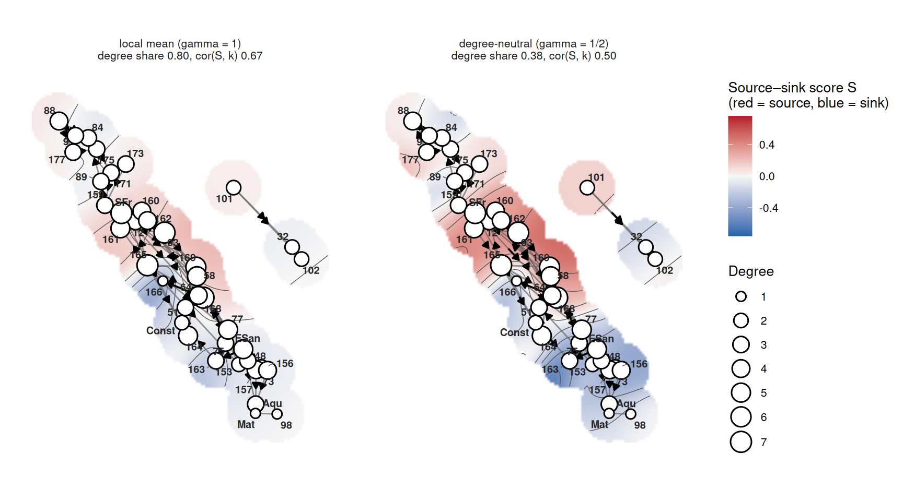

library(gstudio)
library(igraph)
Attaching package: 'igraph'The following objects are masked from 'package:stats':
decompose, spectrumThe following object is masked from 'package:base':
uniondata(arapat)Population Graphs are a graph-theoretic approach to understanding among-population genetic connectivity (Dyer & Nason 2004). Rather than assuming a specific model of gene flow (e.g., island or stepping-stone), population graphs estimate the conditional genetic covariance structure among populations, retaining only statistically significant edges.
library(gstudio)
library(igraph)
Attaching package: 'igraph'The following objects are masked from 'package:stats':
decompose, spectrumThe following object is masked from 'package:base':
uniondata(arapat)The easiest way to create a population graph is with population_graph(), which handles the conversion from genotypes to multivariate data internally:
graph <- population_graph(arapat, stratum = "Species")Warning in popgraph(data, groups, ...): 1 variables are collinear and being
dropped from the discriminant rotation.graphIGRAPH 2577c01 UNW- 3 3 --
+ attr: name (v/c), size (v/n), weight (e/n)
+ edges from 2577c01 (vertex names):
[1] Cape --Mainland Cape --Peninsula Mainland--PeninsulaFor more control, convert genotypes to multivariate format first, then call popgraph() directly:
mv <- to_mv(arapat)
groups <- factor(arapat$Species)
graph <- popgraph(mv, groups)Warning in popgraph(mv, groups): 1 variables are collinear and being dropped
from the discriminant rotation.graphIGRAPH 4ba53de UNW- 3 3 --
+ attr: name (v/c), size (v/n), weight (e/n)
+ edges from 4ba53de (vertex names):
[1] Cape --Mainland Cape --Peninsula Mainland--PeninsulaThe alpha parameter controls edge retention significance (default 0.05):
graph_strict <- popgraph(mv, groups, alpha = 0.01)Warning in popgraph(mv, groups, alpha = 0.01): 1 variables are collinear and
being dropped from the discriminant rotation.graph_strictIGRAPH e66f69f UNW- 3 3 --
+ attr: name (v/c), size (v/n), weight (e/n)
+ edges from e66f69f (vertex names):
[1] Cape --Mainland Cape --Peninsula Mainland--PeninsulaUse as.popgraph() to convert a pre-computed adjacency matrix:
A <- matrix(c(0, 1, 0, 1,
1, 0, 1, 0,
0, 1, 0, 1,
1, 0, 1, 0), nrow = 4)
rownames(A) <- colnames(A) <- LETTERS[1:4]
g <- as.popgraph(A)
gIGRAPH 79dc55e UNW- 4 4 --
+ attr: name (v/c), weight (e/n)
+ edges from 79dc55e (vertex names):
[1] A--B A--D B--C C--DThe package includes two pre-computed population graphs:
data(lopho)
lophoThis graph was created by an old(er) igraph version.
ℹ Call `igraph::upgrade_graph()` on it to use with the current igraph version.
For now we convert it on the fly...IGRAPH 6af7beb UNW- 21 52 --
+ attr: name (v/c), size (v/n), color (v/c), Region (v/c), weight (e/n)
+ edges from 6af7beb (vertex names):
[1] BaC--LaV BaC--Lig BaC--PtC BaC--PtP BaC--SnE BaC--SnI
[7] BaC--StR Ctv--PtP Ctv--SLG Ctv--SnF Ctv--SenBas LaV--Lig
[13] LaV--PtC LaV--SnE LaV--SnF LaV--TsS Lig--PtC Lig--SnI
[19] Lig--StR Lig--TsS PtC--SnE PtC--StR PtC--TsS PtC--SenBas
[25] PtP--SnF PtP--SnI PtP--SenBas SLG--SnF SLG--SnI SnE--StR
[31] SnE--TsS SnF--SnI SnI--StR StR--TsS StR--SenBas CP --Seri
[37] CP --SG CP --SN CP --TS LF --PL LF --SG LF --SI
[43] PL --SenBas PL --SG PL --SI PL --SN
+ ... omitted several edgesdata(upiga)
upigaThis graph was created by an old(er) igraph version.
ℹ Call `igraph::upgrade_graph()` on it to use with the current igraph version.
For now we convert it on the fly...IGRAPH 3157d53 UNW- 18 58 --
+ attr: name (v/c), size (v/n), color (v/c), weight (e/n)
+ edges from 3157d53 (vertex names):
[1] SI --PL SI --LF SI --CP SI --Ctv SI --TrV
[6] SI --SenBas SG --CP SG --Seri SG --EH SG --LaV
[11] PL --LF PL --SN PL --Seri PL --EH PL --SenBas
[16] TS --CP TS --SN TS --Seri TS --EH TS --Ctv
[21] TS --LaV TS --SnF LF --CP LF --SN LF --Ctv
[26] LF --SLG LF --SnF LF --SnE CP --SN CP --EH
[31] CP --LaV CP --SenBas SN --Seri SN --SenBas Seri--SLG
[36] EH --SLG EH --SenBas Ctv --SLG Ctv --TrV Ctv --BaC
+ ... omitted several edgesThe decorate_graph() function merges external data into graph vertex attributes. This is essential for spatial visualization:
data(baja)
head(baja) Region Population Latitude Longitude
1 Baja BaC 26.59 -111.79
2 Baja Ctv 29.73 -114.72
3 Baja LaV 24.04 -109.99
4 Baja Lig 25.73 -111.27
5 Baja PtC 24.19 -111.15
6 Baja PtP 29.03 -113.90lopho_dec <- decorate_graph(lopho, baja, stratum = "Population")
vertex_attr_names(lopho_dec)[1] "name" "size" "color" "Region" "Latitude" "Longitude"Now the graph nodes carry coordinate and metadata attributes.
# Vertex names
V(lopho)$name [1] "BaC" "Ctv" "LaV" "Lig" "PtC" "PtP" "SLG" "SnE"
[9] "SnF" "SnI" "StR" "TsS" "CP" "LF" "PL" "SenBas"
[17] "Seri" "SG" "SI" "SN" "TS" # Degree (number of edges)
degree(lopho) BaC Ctv LaV Lig PtC PtP SLG SnE SnF SnI StR
7 4 6 6 7 5 3 5 5 6 7
TsS CP LF PL SenBas Seri SG SI SN TS
5 4 3 5 5 3 5 5 5 3 # Betweenness centrality
betweenness(lopho) BaC Ctv LaV Lig PtC PtP SLG SnE SnF SnI StR
9 31 4 0 0 25 3 0 16 8 30
TsS CP LF PL SenBas Seri SG SI SN TS
0 2 0 92 98 1 32 15 0 0 The multivariate centroid distance between population centroids in discriminant space:
mv <- to_mv(arapat)
groups <- factor(arapat$Species)
cd <- centroid_distance(mv, groups)
cd [,1] [,2] [,3] [,4] [,5] [,6]
Cape 0.0800000 0.9200000 0.1333333 0.8533333 0.00000000 0.00000000
Mainland 0.2638889 0.7361111 0.8194444 0.0000000 0.01388889 0.00000000
Peninsula 0.6924603 0.3075397 0.3432540 0.0000000 0.59920635 0.03769841
[,7] [,8] [,9] [,10] [,11] [,12]
Cape 0.000000000 0.3000000 0.70000000 0.00000000 0.000000000 0.000000000
Mainland 0.000000000 0.2222222 0.00000000 0.63888889 0.111111111 0.000000000
Peninsula 0.003968254 0.9007937 0.04960317 0.02380952 0.009920635 0.007936508
[,13] [,14] [,15] [,16] [,17] [,18]
Cape 0.9666667 0.03333333 0.00000000 0.9333333 0.000000000 0.000000000
Mainland 0.7916667 0.15277778 0.02777778 0.5277778 0.000000000 0.000000000
Peninsula 0.5714286 0.42857143 0.27976190 0.6726190 0.001984127 0.001984127
[,19] [,20] [,21] [,22] [,23] [,24]
Cape 0.08666667 0.5733333 0.286666667 0.00000000 0.0000000 0.00000000
Mainland 0.00000000 0.0000000 0.000000000 0.00000000 0.0000000 0.05555556
Peninsula 0.00000000 0.0000000 0.009920635 0.09722222 0.3174603 0.33730159
[,25] [,26] [,27] [,28] [,29] [,30]
Cape 0.0000000 0.00000000 0.000000000 0.0000000 0.000000000 0.01333333
Mainland 0.0000000 0.01388889 0.361111111 0.1527778 0.000000000 0.00000000
Peninsula 0.1964286 0.01785714 0.001984127 0.0000000 0.001984127 0.00000000
[,31] [,32] [,33] [,34] [,35] [,36] [,37]
Cape 0.013333333 0.94000000 0.00000000 0.000 0.02 0.00000000 0.00000000
Mainland 0.861111111 0.01388889 0.05555556 0.000 0.00 0.00000000 0.00000000
Peninsula 0.003968254 0.00000000 0.00000000 0.625 0.00 0.03968254 0.03571429
[,38] [,39] [,40] [,41] [,42] [,43]
Cape 0.01333333 0.000000000 0.00000000 0.00000000 0.00000000 0.00000000
Mainland 0.06944444 0.000000000 0.01388889 0.08333333 0.08333333 0.00000000
Peninsula 0.28968254 0.005952381 0.00000000 0.00000000 0.00000000 0.01190476
[,44] [,45] [,46] [,47] [,48] [,49]
Cape 0.00000000 0.0000000 0.0000000 0.00000000 0.00000000 0.00000000
Mainland 0.01388889 0.0000000 0.0000000 0.00000000 0.02777778 0.04166667
Peninsula 0.38293651 0.1150794 0.3730159 0.03571429 0.00000000 0.01785714
[,50] [,51] [,52] [,53] [,54] [,55]
Cape 0.00000000 0.0000000 0.0000000 0.00000000 0.000000000 0.006666667
Mainland 0.09722222 0.2916667 0.2222222 0.04166667 0.000000000 0.000000000
Peninsula 0.05357143 0.0000000 0.0000000 0.00000000 0.001984127 0.000000000
[,56] [,57] [,58]
Cape 0.18 0.7733333 0.04
Mainland 0.00 0.0000000 0.00
Peninsula 0.00 0.0000000 0.00Multivariate variance around each population centroid:
cv <- centroid_variance(mv, groups)
cv Cape Mainland Peninsula
1.519820 2.169841 2.886842 Shannon entropy quantifies the uncertainty in a probability distribution:
# Entropy of the degree distribution
deg <- degree(lopho)
p <- deg / sum(deg)
shannon_entropy(p)[1] 4.344766A measure of how edges deviate from geographic expectations (requires decorated graph with coordinates):
edge_contortion(lopho_dec)Compare the topology of two population graphs:
data(lopho)
data(upiga)
congruence_topology(lopho, upiga)This graph was created by an old(er) igraph version.
ℹ Call `igraph::upgrade_graph()` on it to use with the current igraph version.
For now we convert it on the fly...
This graph was created by an old(er) igraph version.
ℹ Call `igraph::upgrade_graph()` on it to use with the current igraph version.
For now we convert it on the fly...Warning in congruence_topology(lopho, upiga): These two topologies have
non-overlapping node sets! Careful on interpretation.IGRAPH eeb5843 UN-- 16 19 --
+ attr: name (v/c)
+ edges from eeb5843 (vertex names):
[1] BaC --LaV BaC --SnE BaC --StR Ctv --SLG Ctv --SnF
[6] LaV --SnE SLG --SnF StR --SenBas CP --SG CP --SN
[11] CP --TS LF --PL LF --SI PL --SenBas PL --SI
[16] PL --SN Seri--SG Seri--SN SN --TS Use test_congruence() to test whether two graphs are more similar in topology than expected by chance:
test_congruence(lopho, upiga, method = "combinatorial")The permute_popgraph() function creates a null distribution of graph topologies by permuting the data:
null_graphs <- permute_popgraph(mv, groups, nperm = 99)The - operator computes the difference between two popgraphs (removes edges in common). You can also extract subgraphs using igraph functions:
smaller <- delete_vertices(lopho, "SenBas")
V(smaller)$name [1] "BaC" "Ctv" "LaV" "Lig" "PtC" "PtP" "SLG" "SnE" "SnF" "SnI"
[11] "StR" "TsS" "CP" "LF" "PL" "Seri" "SG" "SI" "SN" "TS" M <- to_matrix(lopho)
M[1:5, 1:5] BaC Ctv LaV Lig PtC
BaC 0 0 1 1 1
Ctv 0 0 0 0 0
LaV 1 0 0 1 1
Lig 1 0 1 0 1
PtC 1 0 1 1 0df <- to_df(lopho)
head(df) name size color Region
1 BaC 12.158810 #FDAE61 Baja
2 Ctv 3.880886 #FDAE61 Baja
3 LaV 3.533757 #FDAE61 Baja
4 Lig 4.731355 #FDAE61 Baja
5 PtC 4.684652 #FDAE61 Baja
6 PtP 10.925375 #FDAE61 Bajajson <- to_json(lopho)
cat(json)# As sf object
sf_obj <- to_sf(lopho_dec)
# As KML
to_kml(lopho_dec, file = "lopho.kml")The .pgraph format is a simple text representation:
write_popgraph(lopho_dec, file = "lopho.pgraph")path <- system.file("extdata", "lopho.pgraph", package = "gstudio")
g <- read_popgraph(path)
gIGRAPH d4c32d7 UNW- 21 50 --
+ attr: name (v/c), size (v/n), color (v/c), weight (e/n)
+ edges from d4c32d7 (vertex names):
[1] BaC --LaV BaC --Lig BaC --PtP BaC --SnE BaC --SnI
[6] BaC --StR BaC --SenBas Ctv --PtP Ctv --SLG Ctv --SnF
[11] Ctv --SenBas LaV --Lig LaV --SnE LaV --SnF LaV --TsS
[16] Lig --PtC Lig --SnE Lig --SnI Lig --StR PtC --SnE
[21] PtC --StR PtC --TsS PtP --SnF PtP --SnI PtP --SenBas
[26] SLG --SnF SLG --SnI SnE --StR SnE --TsS SnF --SnI
[31] SnI --StR StR --TsS StR --SenBas CP --LF CP --Seri
[36] CP --SG CP --SN CP --TS LF --PL LF --SG
+ ... omitted several edgesGenerate a random graph with the same nodes and degree sequence as the original (the default, mode = "degree", uses degree-preserving edge swaps), or with the same number of edges placed at random (mode = "full"):
rg <- randomize_graph(lopho)
rgIGRAPH 65787eb UN-- 21 52 --
+ attr: name (v/c), size (v/n), color (v/c), Region (v/c)
+ edges from 65787eb (vertex names):
[1] PtC --TS BaC --CP Lig --PL SenBas--SN Seri --SN
[6] PtP --SenBas SnI --SG Ctv --SenBas SnF --SnI TsS --Seri
[11] SG --SN SnE --SnF SnE --SnI PtC --CP Ctv --LaV
[16] BaC --SnI Ctv --SN BaC --PtC SnI --SenBas BaC --Lig
[21] LaV --SnF PtC --Seri SnF --CP StR --PL LaV --SLG
[26] Lig --SG LF --SenBas PtP --LF SnE --SI SnE --StR
[31] BaC --StR PtC --SnF PtP --TsS Ctv --Lig LaV --PtP
[36] PtC --StR StR --TsS BaC --SG PL --TS Lig --LF
+ ... omitted several edgesEach edge of a Population Graph is symmetric, but the two populations it joins are compared against different neighbourhoods. Genetic gravity reads direction from that difference. For population \(i\), the neighbourhood weight \(w_{j\mid i}\) is \(j\)’s share of a Gaussian kernel over \(i\)’s retained neighbours, with bandwidth \(b_i = \gamma\, s_i/k_i\) (a multiple of \(i\)’s mean edge weight). The gravity asymmetry of an edge is \(\Delta_{i\rightarrow j} = w_{i\mid j} - w_{j\mid i}\): positive when \(i\) holds more weight in \(j\)’s neighbourhood than \(j\) holds in \(i\)’s, marking \(i\) as the genetic source. The source–sink score \(S\) places every population on one scale, with \(S_i - S_j \approx \Delta_{i\rightarrow j}\) over all edges. Throughout, higher means more of a source.
Two bandwidths answer different questions:
gamma = 0.5, the degree-neutral bandwidth (the default in the functions below), for inferring direction. At this bandwidth, source–sink scores carry essentially no degree signature under symmetric migration.gamma = 1, the local mean, for describing connectivity. It keeps the contribution of degree, so hubs read as sources and leaves as sinks.gamma = Inf gives the flat kernel, where every quantity is set by degree alone. Whatever the bandwidth, report the degree share: the share of the variance in \(\Delta\) explained by the degree-only term \(\Delta^0_{i\rightarrow j} = 1/k_j - 1/k_i\).
pops <- population_graph(arapat, stratum = "Population")
coords <- strata_coordinates(arapat)
scores <- source_sink_scores(pops, gamma = 0.5)
head(scores[order(-scores$S), c("node", "S", "gravity", "degree")]) node S gravity degree
93 93 0.5356707 2.2960382 7
169 169 0.5246716 1.6260592 6
58 58 0.5107543 1.8755647 5
SFr SFr 0.4693973 1.5438684 7
161 161 0.4634282 1.4786831 5
160 160 0.3832045 0.6918531 4c(degree_share = attr(scores, "degree_share"), cor_S_degree = attr(scores, "cor_S_degree"))degree_share cor_S_degree
0.3775389 0.4977765 # the same graph at the local mean: degree carries much more of the index
attr(source_sink_scores(pops, gamma = 1), "degree_share")[1] 0.8007861Edge-level quantities, in the same sign convention, come from gravity_edges(). The neighbourhood-weight matrix comes from neighbourhood_weights():
head(gravity_edges(pops)) from to weight w_from w_to Delta Delta0
1 101 102 8.453247 0.8179543 0.7625152 0.05543906 0.0000000
2 101 32 11.339293 0.5855239 0.2374848 0.34803910 0.0000000
3 102 32 12.362907 0.4144761 0.1820457 0.23243042 0.0000000
4 12 161 2.904321 0.1955346 0.4208908 -0.22535617 -0.1333333
5 12 165 3.531044 0.1423137 0.1848955 -0.04258181 -0.1904762
6 12 93 2.959077 0.1216382 0.3942137 -0.27257543 -0.1904762plot_gravity_field() interpolates \(S\) over the node coordinates (red = source, blue = sink), draws the edges, and places an arrow at each edge midpoint, pointing from source to sink with length proportional to \(|\Delta|\). A named list of graphs, or one graph at several bandwidths, is drawn on common scales. mask_dist sets how far from a node the surface extends (default 0.75 times the median nearest-neighbour distance); clustered sampling locations usually need a larger value:
plot_gravity_field(list(`local mean (gamma = 1)` = pops, `degree-neutral (gamma = 1/2)` = pops),
coords = coords, gamma = c(1, 0.5), mask_dist = 0.6)
The quantities behind the map are a gravity_field object. Compute it once, then print it, convert it with as.data.frame() (nodes or edges) for your own plots, or plot() it. A list of fields, or of fields and graphs mixed, can be passed to plot_gravity_field(); each field keeps its own coordinates and bandwidth:
field <- gravity_field(pops, coords = coords, gamma = 0.5)
fieldGravity field: 39 populations, 71 edges, gamma = 0.5
degree share 0.378, cor(S, degree) 0.498, gradient share 0.963
strongest sources: 93 (0.536), 169 (0.525), 58 (0.511)
strongest sinks: 163 (-0.758), 75 (-0.655), 156 (-0.535)head(as.data.frame(field, what = "edges")) from to weight delta source sink x_mid y_mid ux
1 101 102 8.453247 0.05543906 101 102 -109.8503 27.14261 0.6885814
2 101 32 11.339293 0.34803910 101 32 -109.9507 27.27146 0.7014890
3 102 32 12.362907 0.23243042 102 32 -109.2267 26.50899 -0.6144068
4 12 161 2.904321 -0.22535617 161 12 -112.8258 27.10951 0.9104229
5 12 165 3.531044 -0.04258181 165 12 -112.5375 26.71569 -0.2645711
6 12 93 2.959077 -0.27257543 93 12 -112.3558 27.06410 -0.9342507
uy
1 -0.7251591
2 -0.7126803
3 0.7889894
4 0.4136788
5 0.9643662
6 0.3566168source_sink_test() asks whether \(S\) changes monotonically along a hypothesized covariate, such as position along a river or, here, latitude along the peninsula. The statistic is Spearman’s \(r(S, x)\); \(r < 0\) places the sources at low \(x\). The default null is Moran spectral randomization on the graph’s own topology (msr_null(), native to gstudio). It reproduces the node-level smoothness that \(S\) inherits from drift; a plain permutation of \(S\) does not, and is anti-conservative.
lat <- setNames(coords$Latitude, coords$Stratum)
set.seed(1)
source_sink_test(pops, x = lat, nperm = 499)Source-sink gradient test
r(S, x) = 0.347, p = 0.356 (graph null, 499 replicates, 39 nodes)
bandwidth gamma = 0.5; degree share (R^2 of Delta on Delta0) = 0.378
sources at high values of xpgd() splits each edge’s conditional genetic distance into two directional parts in proportion to the neighbourhood weights. Because it is a distance, it is shorter in the direction of gene flow. directional_ibgd() asks whether isolation by graph distance is described better by these directed distances, with separate forward and reverse slopes along the hypothesized axis, than by the symmetric cGD. \(\Delta R^2 > 0\) favours the directional description; the slope ratio \(b_{fwd}/b_{rev} < 1\) means distance accumulates more slowly downstream.
directional_ibgd(pops, x = lat) r2_cgd r2_pgd_blind r2_pgd_dir delta_r2 b_fwd b_rev slope_ratio
1 0.2616567 0.237743 0.2592261 -0.002430601 3.462509 2.404485 1.440021
preferred gamma
1 FALSE 0.5The two tests answer different questions. Under strong drift the model comparison can prefer a directional fit by chance, so read it alongside the source–sink test. Edge-level permutation tests of \(\Delta\) (asymmetry_significance() and its modes) are not recommended as tests of direction: under symmetric migration they are anti-conservative, or never reject.
As loci fix, graphs are estimated from fewer informative loci, which inflates \(|\Delta|\) whatever the direction of gene flow. locus_subsample_null() rebuilds the graph from random subsets of polymorphic loci, to show how much \(|\Delta|\) information loss alone can produce at a given level of polymorphism:
locus_subsample_null(arapat, k = c(2, 3, 4, 6), nsub = 3)A directional stepping stone, with rates to the next population downstream (m_fwd) and upstream (m_rev), plugs into simulate_pop():
f <- data.frame(Population = rep(sprintf("Pop%02d", 1:10), each = 2), Locus = "L1",
Allele = rep(c("01", "02"), 10), Frequency = 0.5)
pop <- make_populations(f, N = 50)
mm <- migration_matrix(sprintf("Pop%02d", 1:10), model = "stepping_stone_1d_asym",
m_fwd = 0.04, m_rev = 0.01)
out <- simulate_pop(pop, ngen = 200, migration = migration_event(mm), verbose = FALSE)